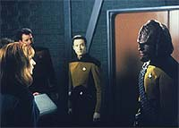
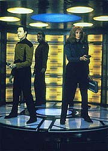
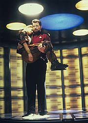
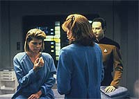

|
MANCHETE
DO EPISDIO
Histria
relembra Tasha Yar atravs de
sua irm e pe
em pauta a lealdade
Episdio
anterior | Prximo
episdio
Sinopse:
Data Estelar: 44215.2.
A tripulao da Enterprise responde a um pedido de socorro de um
cargueiro da Federao avariado que est orbitando o planeta
Turkana IV, local de nascimento da falecida tenente Tasha Yar.
O cargueiro explode, mas Data descobre um casulo de fuga que vai em
direo ao planeta. Picard despacha um grupo avanado para salvar
os membros da tripulao acidentada.
 Ao
alcanar a superfcie do planeta, Riker e sua equipe encontram
Hayne, lder da Coaliso - um das duas faces de guerrilheiros
do planeta (a outra a "Aliana"). Quando Data revela
que um tripulante anterior da Enterprise nasceu em Turkana IV, Hayne
oferece ajudar na procura dos acidentados com ajuda de um dos
camaradas dele, Ishara Yar --a irm de Tasha.
Ishara conquista facilmente a tripulao da Enterprise e, sob o
pretexto de ajud-los, consegue ajuda para se infiltrar no corao
da base da Aliana. De l ela tenta desarmar as defesas inimigas
de sua faco, mas impedida por Data e Riker.
No fim, apesar de Ishara ter atacado oficiais da Frota, Picard
permite que ela volte para seu povo, sem ir a julgamento.
Comentrios:
 "Legacy"
mais um episdio que traz elementos apresentados durante a
primeira temporada da srie. Mas neste caso no h o retorno
efetivo de um personagem, mas apenas uma fantasmagrica presena
em torno de outra pessoa. Ter Ishara Yar na Enterprise torna obrigatrio
nos lembrarmos de Tasha, a oficial de segurana da nave durante o
primeiro ano da srie.
Se a personagem interpretada por Denise Crosby no deixa muitas
saudades entre os fs, o mesmo no se pode dizer entre os
tripulantes da Enterprise. Mais do que nunca, vemos o quanto Tasha
faz falta a Worf, Picard e, especialmente, Data.
E o andride a ponte ideal para que a histria se desenvolva. A
"esperteza" de Ishara para conquistar a simpatia e a
confiana da tripulao sobe exponencialmente em Data, que alm
de j ver as coisas sob uma perspectiva ingnua, guarda mais do
que todos um afeto (embora ele se diga incapaz de sentimentos) por
Tasha.
O episdio trabalha sobre o famoso axioma "diga-me com quem
andas e eu te direi quem s". Ishara, mostrando ao longo do
episdio uma raiva contida por sua irm --a quem chamou at de
covarde--, dificilmente mudaria to rapidamente de idia.
 Tendo
como colegas os lderes da "Coaliso", ela provavelmente
estaria j muito envolvida com a causa para poder se desligar dela.
Infelizmente, Data no sabe que o conceito "diga-me quem
sua irm e eu te direi quem s" no passa de balela. "Legacy"
acerta ao mostrar que, embora seja essa uma premissa falsa, em geral
inevitvel pensar dessa maneira. Principalmente quando se trata
de um parente de uma pessoa querida e perdida. A saudade e a empatia
falam mais alto que a razo.
interessante tambm o dilogo final entre Data e Riker, que
define muito bem a questo da confiana. Confiar sempre
importante, mas igualmente arriscado.
Durante essa histria, vemos como o elemento sutileza contribui
para um bom segmento de Jornada nas Estrelas. Durante as primeiras
temporadas, Gene Roddenberry queria enfiar goela abaixo do
telespectador uma poro de "morais da histria" e
coisas do tipo, em detrimento do enredo.
Agora, sob a batuta de Michael Piller e Rick Berman, vemos como
muito mais interessante escrever o roteiro priorizando o enredo e
deixar a "moral da histria" por conta do telespectador.
Ele capaz de tirar as concluses sozinho.
 A
idia usar um conceito abstrato como tema, mas no deix-lo
que fique atrapalhando na hora de desenvolver uma boa histria. Em "Legacy",
vemos como essa sintonia fina manteve o espirto de Gene, mas soube
aprimorar o jeito de contar a histria. Jornada ficou mais
divertida e consistente, mas no menos profunda.
Tecnicamente, merecem destaque as
tomadas em que a cmera acompanha os movimentos do grupo avanado
e de Ishara Yar pelos corredores da base da Aliana. Alm de
contribuir para o andamento do episdio, tm interessante valor
esttico.
Citaes:
Ishara - "I
don't want to kill you, Data... but I will."
("Eu no quero mat-lo, Data... mas eu vou.")
Trivia:
 A nave estelar USS Potemkin, a ltima a ter contato com Turkana IV
antes da chegada da Enterprise, foi uma das naves que Riker, ento
como tenente, serviu antes de ser o primeiro oficial de Picard.
A nave estelar USS Potemkin, a ltima a ter contato com Turkana IV
antes da chegada da Enterprise, foi uma das naves que Riker, ento
como tenente, serviu antes de ser o primeiro oficial de Picard.
Para
economizar verba, o produtor de design da srie, Richard James,
utilizou cenrios do interior do cubo Borg para construir o
complexo subterrneo de Turkana IV.
Esse
o episdio de nmero 80 da Nova Gerao, assim
superando a Srie Clssica, que teve 79 episdios. Porm,
se considerarmos que a Clssica teve um episdio duplo, "The
Menagerie", o prximo episdio ("Reunion")
que seria o responsvel pela quebra da marca. Alheios a tudo
isso, ao final das filmagens de "Legacy", o elenco
e equipe da Nova Gerao fizeram uma festa comemorativa.
H
algumas piadas internas que fazem referncia quebra do recorde.
Picard, por exemplo, diz que a Enterprise acabou de descartar uma
misso arqueolgica em Camus II. O ltimo episdio da Srie
Clssica, "Turnabout
Intruder", se passa justamente em Camus II. A nave
Potemkin tambm havia sido mencionada no episdio final da srie
original. As piadas foram uma idia de Jonathan Frakes, RIck Berman
e o coordenador de roteiros Eric Stillwell.
Ficha
tcnica:
Escrito por Joe Menosky
Direo de Robert Scheerer
Exibido em 29/10/1990
Produo: 080
Elenco:
Patrick Stewart como
Jean-Luc Picard
Jonathan Frakes como William Thomas Riker
Brent Spiner como Data
LeVar Burton como Geordi La Forge
Michael Dorn como Worf
Gates McFadden como Beverly Crusher
Marina Sirtis como Deanna Troi
Wil Wheaton como Wesley Crusher
Elenco convidado:
Beth Toussaint
como Ishara Yar
Don Mirault como Hayne
Colm Meaney como O'Brien
Vladimir Velasco como Tan Tsu
Christopher Michael como o tenente da Coaliso
Episdio
anterior | Prximo
episdio
|